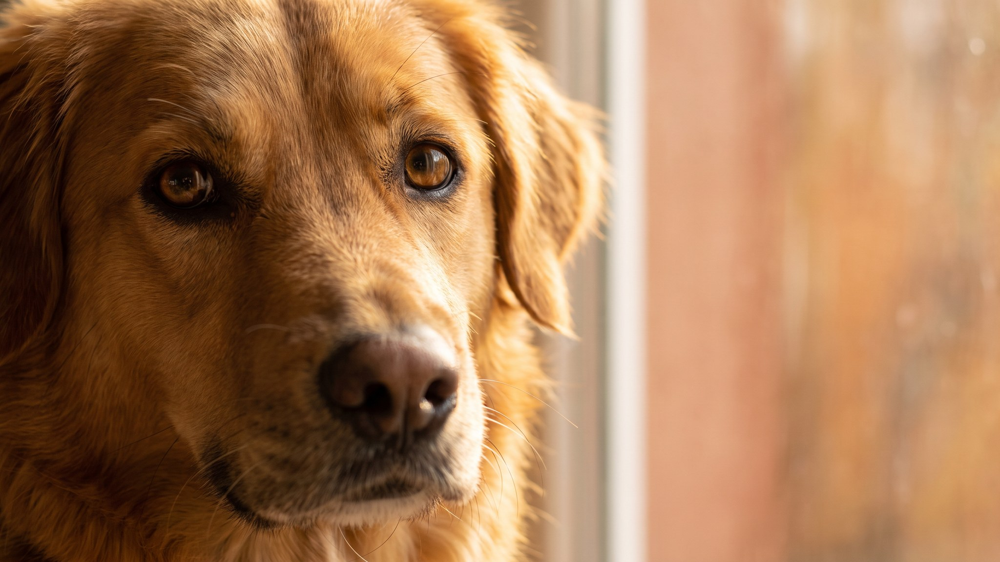

Утром собака бодро выбегает на снег, а на обратном пути начинает поджимать лапу и тянет к подъезду. Зимняя прогулка меняется из-за ветра, мокрого снега и состояния конкретного животного. Порядок ниже поможет собраться, выбрать нагрузку и закончить уход сразу после возвращения.
🐾 Чтобы уход не держать в голове
AnimaLife напомнит, когда стричь когти, вычёсывать, купать и обрабатывать от паразитов, и заведёт дневник по вашему питомцу. Бесплатно.
Настроить напоминания → Настроить в MAX →
У вас iPhone? AnimaLife есть в App Store
Перед каждым выходом посмотрите температуру, ветер и прогноз осадков. Оцените привычное состояние собаки: она подходит к двери, двигается как обычно и готова к надеванию снаряжения. Для щенка, пожилого питомца и короткошёрстной собаки запланируйте более короткий выход.
Соберите комплект у двери заранее: поводок, шлея или ошейник, адресник, пакеты и лакомство. В тёмное время добавьте светоотражающий элемент. Если используете комбинезон или ботинки, проверьте застёжки и сухость подкладки. Полотенце и небольшой тазик для лап оставьте дома, чтобы не искать их с мокрой собакой на руках.
Для длинного маршрута возьмите воду и запасной поводок. До выхода посмотрите, свободно ли собака поворачивает голову в одежде и наступает на все лапы в ботинках. Дома примерка занимает 2 минуты. Ремни поправляют без спешки на крыльце.
Начните с знакомой дорожки, где можно быстро повернуть домой. По возможности обойдите участки с глубокой наледью и обильной посыпкой реагентами. В сильный ветер выбирайте двор с защитой от зданий, а во время снегопада сократите расстояние. Не отпускайте собаку с поводка рядом с дорогой или замёрзшим водоёмом.
Первые 10 минут наблюдайте за походкой и желанием идти. Нормально, если собака обнюхивает следы, двигается ровно и откликается на вас. Когда она поджимает лапы, останавливается, дрожит или упорно разворачивается домой, завершайте выход. Длительность определяет поведение сегодня, а не вчерашняя норма. В мороз лучше добавить короткую игру дома вместо увеличения маршрута.
Не сравнивайте прогулку с прошлым сезоном: оценивайте собаку в начале и в середине каждого выхода. Если через 15 минут она всё так же активно идёт вперёд, продолжайте по безопасному маршруту. После резкого похолодания первый выход сделайте короче привычного.
После ухода собака обычно пьёт, осматривается и ложится отдыхать. Лапы остаются сухими, походка ровная, желание встать и пройти по комнате сохраняется. Повторяйте этот осмотр после каждого выхода, даже если маршрут занял несколько минут.
Полотенце сразу отправьте на просушку, а ботинки и комбинезон очистите от снега. Раз в неделю проверьте ремни, липучки и светоотражатели. Влажную амуницию просушите перед следующим выходом, иначе она будет охлаждать собаку с первых минут.
Покажите собаку врачу, если хромота или нежелание опираться на лапу сохраняются после возвращения домой. Поводом для обращения будут заметное повреждение кожи, постоянное вылизывание одной лапы, резкая вялость либо необычная дрожь, которая не прекращается в тепле. Запишите, когда изменилось поведение и как выглядел маршрут.
Материал носит информационный характер и не заменяет очную консультацию ветеринара.
🐾 Заведите дневник ухода за собакой
Вес, шерсть, обработки, прививки — всё в одном месте. А если что-то смущает, AI-ветеринар ответит круглосуточно и бесплатно.
Завести дневник → Завести в MAX →
У вас iPhone? AnimaLife есть в App Store
🐾 Понравился разбор?
Подпишитесь на канал — каждый день разбираем по одному тревожному симптому у кошек и собак: что в пределах нормы, а когда пора к врачу. Подпишитесь, чтобы не пропустить разбор, который может спасти здоровье вашего питомца.